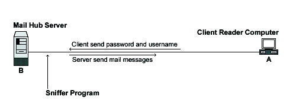

| Securing and Optimizing Linux: RedHat Edition -A Hands on Guide | ||
|---|---|---|
| Prev | Chapter 23. Linux IMAP & POP Server | Next |
Tcp-wrappers take cares to start and stop IMAP or POP server. Upon execution, inetd reads its configuration information from a configuration file which, by default, is /etc/inetd.conf. There must be an entry for each field of the configuration file, with entries for each field separated by a tab or a space.
Edit the inetd.conf file, vi /etc/inetd.conf and add or uncomment the line related to the service you want to enable. If you want to use IMAP then uncomment the line related to it, if is POP that you want to use in your server, then uncomment it instead of IMAP. In our example below we'll use IMAP service.
#pop-2 stream tcp nowait root /usr/sbin/tcpd ipop2d
#pop-3 stream tcp nowait root /usr/sbin/tcpd ipop3d
imap stream tcp nowait root /usr/sbin/tcpd imapd
|
Don't forget to update your inetd.conf file by sending a SIGHUP signal killall -HUP inetd after adding or uncommenting the corresponding line.
[root@deep /root]# killall -HUP inetd
|
If the IMAP/POP server you want to install is a private and limited server for wheel knows real IP address clients, you can use the security feature of tcp-wrappers to control, which can connect, to your server and from where. If you intended to offer mail service to a dial-up clients or a Webmail service for example, then you cannot use this feature. Edit the hosts.deny file, vi /etc/hosts.deny and add the line:
ALL: ALL@ALL, PARANOID
|
Edit the hosts.allow file, vi /etc/hosts.allow and add the line:
imapd: 216.209.228.34 my.domain.com
|
Be aware that IMAP/POP programs use plain text passwords by default. Anyone running a sniffer program along your network path can grab your username/password and use them to log in as you. It's not because you use an IMAP/POP mail reader on your LINUX system that you need to run an IMAP/POP server locally. Check your configuration, and if you use a remote/external IMAP/POP server then uninstall IMAP/POP on your system.

With WebMail IMP, communications from the mail server through to the client machine are encrypted with the SSL protocol using a web browser.
Further documentation, for more details, there are several man pages you can read:
- Internet Message Access Protocol server
- Post Office Protocol server